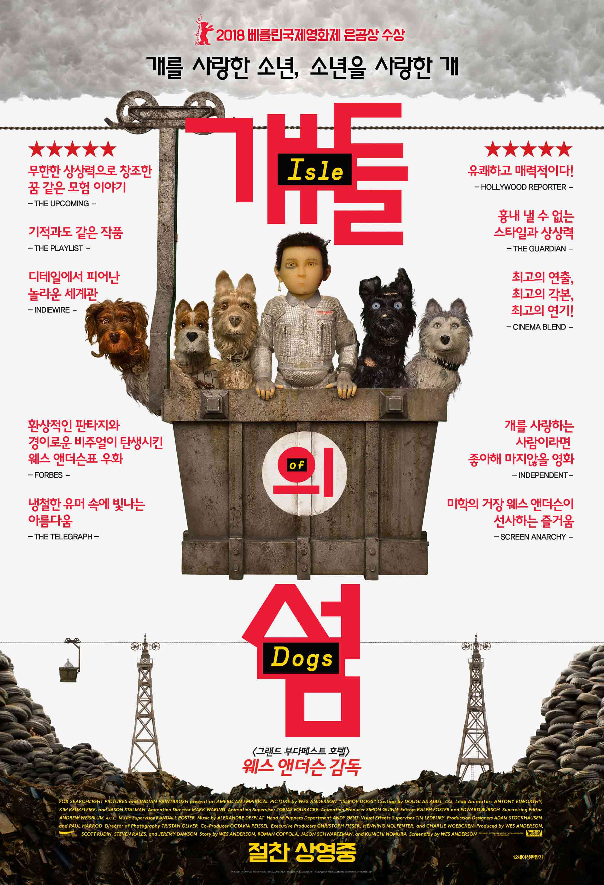

그 후로 둘은 펜팔을 통해 감춰왔던 상처와 외로움을 나누며 점점 가까워진다.
서로를 보듬어주는 유일한 소울메이트이자 연인이 된 '샘'과 '수지'는
아무도 모르는 둘만의 아지트를 찾아 떠나기로 결심하고, 필요한 준비물들을 챙겨 각자 약속 장소로 향한다.
몇 시간 후 '샘'과 '수지'의 실종사건으로 인해 펜잔스 섬은 발칵 뒤집히고,
수지의 부모님과 카키 스카우트 대원들은 둘의 행방을 찾아 수색작전을 벌이기 시작하는데...
과연 '샘'과 '수지'의 애틋한 사랑은 이루어질 수 있을까?
살인을 당한다.
유력한 용의자로 지목된 사람은 바로 전설적인 호텔 지배인이자 그녀의 연인 ‘구스타브’! 구스타브는 누명을 벗기 위해 충실한 로비보이 ‘제로’에게 도움을 청하고, 그 사이 구스타브에게 남겨진 마담 D.의 유산을 노리던 그녀의 아들 ‘드미트리’는 무자비한 킬러를 고용해 [그랜드 부다페스트 호텔]을 찾게 되는데…

인류를 위협하는 개 독감이 퍼지자, 세상의 모든 개들은 쓰레기 섬으로 추방되고, 자신이 사랑하던 개를 잃은 소년은 개를 찾아 홀로 섬으로 떠난다.
소년은 그 곳에서 다섯 마리의 특별한 개들을 만나게 되고, 함께 사라진 개를 찾아가는 그들 앞에 기상천외한 모험이 펼쳐지는데…
개를 사랑한 소년,
소년을 사랑한 개
남다른 개들의 색다른 어드벤쳐가 시작된다!
개를 사랑한 소년,
소년을 사랑한 개
남다른 개들의 색다른 어드벤쳐가 시작된다!
맏형 프랜시스는 이번 여행을 계기로 서먹한 형제 사이가 돈독해지길 바란다. 항상 이혼생각에 잠겨있던 찰라 아내가 임신하자 구체적으로 이혼을 계획하는 둘째 피터, 헤어진 애인에게 병적으로 집착하는 막내 잭. 선로가 있어도 길을 잃어버리는 대책 없는 인도기차 ‘다즐링 주식회사’를 탄 채 세 형제의 사고만발 인도여행이 시작되는데…